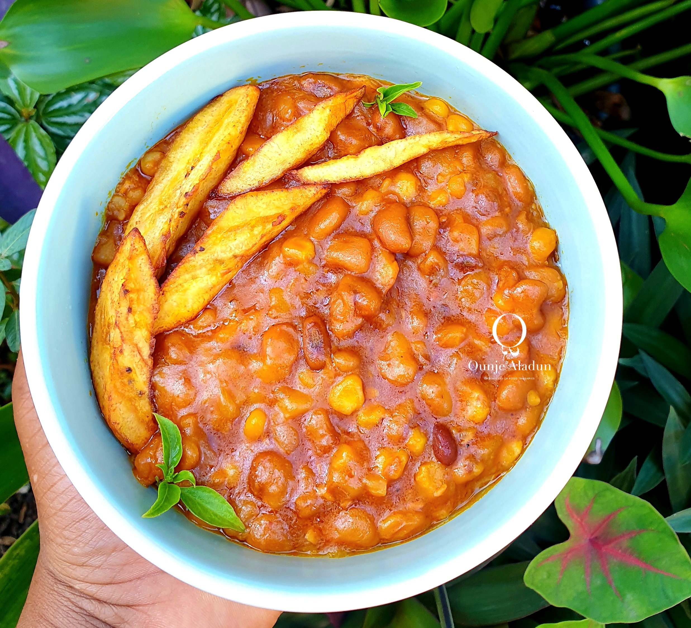

Adalu

Description
Adalu is a local delicacy of the indegeneous Ijebu people in the southwest part of Nigeria. It is easy to prepeare this sweet disd and the feeling is always unforgettable
Ingredients
There are different ingredients used in the preparation of jAdalu but the most common and important ones are listed below:
- Beans
- Maize
- Pepper
- Palm Oil
- Sauce
- Water
Step: Preparation
- Wash the beans and put in a pot
- Put water in the pot and boil for 10 minutes
- Add a sizable amount of maize depending on your preferences
- Wash the pepper and blend
- Put the palm oil in a pot and heat for 5 minutes
- Pour the blended pepper into the pot and fry for 10 minutes
- Pour the sauce into the pot and stir for 5 minutes
- Pour the boiled beans into the pot and stir for 5 minutes
- Allow to cook for 10 minutes
- Remove from heat and serve